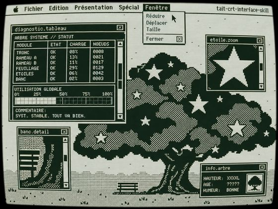

Young's Insight
SHARE
↗
CODEX IMAGE GEN SKILL
2026.08.08
🖥️
TaiT CRT
.
crt-interface-skill · Codex
开源
182★
上传一张人像，
CRT 复活它
——像素壁纸 + Macintosh 悬浮视窗 + 扫描线辉光，8 套色卡任选
✦ 轻触任何元素探索 · 拖动卡片看 3D 视差
Gallery · 真实生成效果

经典 · CLASSIC
经典
极客01
游戏01
粉黛
色卡
参考图
Signals
CODEX SKILL · 2026.08
182
Stars · 5 天破百
8
预设色卡
4
预设比例
30
质量门槛条目
Pipeline · 从人像到 CRT 插画
两阶段入口
选色卡+比例
主体锚定
识别+锁定名单
漫画化突变
5-9 块面质块
像素拓扑
全局 p×p 格子
后处理
CRT畸变
像素壁纸 · 独立重绘
主体 60-80%，锚点保留，不套滤镜
→
Macintosh 悬浮视窗
3-6 窗分层 + 1-3 元素提取窗
→
全局像素格子
p≈短边/384，棋盘格灰度
→
8 套色卡 · 固定签名
经典→游戏 8 色 + 不可变签名
→
Stack & Spec
Codex
SKILL.md
finalize_crt.py
Pillow
8-bit
Minitel
TaiT-tt/tait-crt-interface-skill
GITHUB →
CLOSE